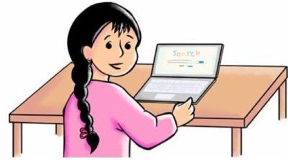

Dear Oporajita…
A supportive female persona, imagined as a descendant of Begum Rokeya, asks about students’ lives and challenges.
AN INTERACTIVE RESEARCH ARTICLE
What women in Bangladesh need to learn, belong, and build a future in computing.
Let’s begin
01 / THE BIGGER PICTURE
Meena, the familiar South Asian cartoon character, helped generations imagine a girl going to school. In these workshops, participants imagined her next chapter: Meena using a computer.
But becoming a woman in computing takes more than a device or a university place. It takes a chance to practice. People who take your ambitions seriously. And a way to get home safely.
Two research papers listen to women studying and working in computing in Bangladesh. Together, they ask what stands in the way—and what a more supportive future could look like.
Sources: Ahmed et al., 2025, §§6–9 ↗ · Ahmed et al., 2026, §6.2.2 ↗
“As a female student, one needs to work a bit harder than the male counterpart to prove their worth and that’s a bit disheartening in the era of establishing equal rights.”
These are connected studies, not two independent student samples. The counts are not added together.
02 / HOW THE RESEARCH LISTENED
Criticizing a teacher or a family member can be difficult. Instead of beginning with direct questions, the researchers invited students to write to two fictional characters. This method is called fictional inquiry.
A supportive female persona, imagined as a descendant of Begum Rokeya, asks about students’ lives and challenges.
A fictional male authority questions women’s ability and commitment. Students can answer without having to confront a real person.
The same students develop solutions in co-design workshops: letters become discussions, flowcharts, sketches, and proposals.
2025 / A 360° PERSPECTIVE
48 students plus 23 stakeholders: faculty and administrators, parents, IT professionals, and graduate students and faculty. The study connects professional experiences with student perspectives over a year and a half.
Analysis: qualitative themes, composite personas, and Naila Kabeer’s resources–agency–achievements framework.
Read the 2025 paper ↗2026 / FICTIONAL INQUIRY + CO-DESIGN
48 women in CSE at four universities across Dhaka, Rajshahi, Sylhet, and Chattogram. The article examines workshop responses and participant-designed solutions in greater depth.
Analysis: qualitative coding, sentiment and emotion models, human review, and a model-training-data audit.
Read the 2026 paper ↗Students were recruited purposively through trusted key informants; the 2025 stakeholders were recruited through networks and snowball sampling. Institutional names were withheld to protect participants. Both papers describe institutional ethics approval and participant consent.
The regional student counts are Dhaka 11, Rajshahi 10, Sylhet 16, and Chattogram/Chottogram 11. The 2025 stakeholder breakdown is faculty/administrators 5, parents 6, IT professionals 6, and graduate students/faculty 6.
These are situated qualitative studies, not representative surveys of all women in Bangladesh. The 2025 paper did not include policymakers; the 2026 paper focuses on female tertiary students rather than male peers or other stakeholders. Proposed solutions were workshop concepts, not evaluated interventions.
The papers contain differences in participant labels and workshop scheduling descriptions. This article preserves paper-specific identifiers and source tables rather than treating them as a single reconciled dataset.
· ·
03 / A CHANCE TO LEARN
Getting into computing does not guarantee equal access to learning. Students described crowded labs, teachers who underestimated them, weak internet in women’s halls, and rules that cut short their practice time.
The 2025 paper exposes a tension: professionals emphasized building skills to cope with bias; students wanted the barriers to skill-building changed.
Participants designed changes to the systems around them. One flowchart imagines teacher recruitment with training, psychological assessment, a demonstration class, and continuing feedback.
2025 §§6.1–6.3 · 2026 §§6.1.1–6.1.2
FOLLOW A BARRIER → FIND A PROPOSAL
04 / A PLACE TO BELONG
Family can open possibilities—or narrow them. Students described pressure to choose a socially preferred subject, marry before graduation, or prove that engineering was the right choice.
Professional and graduate-student accounts add another layer: decisions about higher study, work, marriage, and parenthood can become decisions for an extended family. Support from a mother, partner, mentor, or colleague can make a different path possible.
“Ammu (mother) asked me to apply abroad. She said, why would you waste time staying here? She did not allow any negative comments to reach me.”
Students proposed counseling and awareness for parents, online networks, female mentors, and visible role models. They also asked for flexible work, care support, and greater public recognition of women’s achievements.
Meena at a computer belongs to this set of ideas: a familiar character can make a future in technology imaginable from an early age.
2025 §§7.1–7.2 · 2026 §§6.1.3–6.2.2
FROM THE 2025 PAPER / COMPOSITE PERSONAS
These are research composites, not portraits of individual participants. Select a pathway to see the original persona cards.
05 / A SAFE WAY FORWARD
A programming lab may be open 24 hours. That opportunity means something different when a student must return to her hall by sunset, or cannot safely travel home after practice.
Safety connects learning, competitions, and work. The 2025 professionals often managed transport privately; students imagined changes to services, institutions, and public space.
“Although our ACM lab remains open 24 hours for practice sessions and programming-related activities, we (female students) are unable to access the facilities during night time.”
Participants proposed dedicated transit, women drivers, available seats, emergency response links, and transport tracking. Their drawings also pictured ordinary freedoms: walking alone, talking with a friend at night, or going to a concert without harassment.
These are proposals and aspirations. The studies do not demonstrate that surveillance, AI detection, or any particular safety app works. The wider finding is a need for safe mobility and institutional responsibility.
2025 §8 · 2026 §6.3
·
06 / READING BETWEEN THE LINES
The fictional characters elicited different kinds of responses. Researchers observed forceful rebuttals to M3 and more vulnerable sharing with Oporajita.
The 2026 paper adds computational analysis. The sentiment model assigned more negative responses to Oporajita; the emotion model suggested more anger toward M3, and more fear and sadness toward Oporajita. Co-design responses were predominantly classified as neutral.
07 / PUTTING IT TOGETHER
The 2025 paper uses Naila Kabeer’s empowerment framework to connect access to resources, the agency to make decisions and act, and the achievement of valued goals.
The 2026 paper gives students space to articulate what those conditions might look like. Their proposals extend from a better classroom to a family that listens, a mentor who answers, and a journey home without fear.
The combined insight: supporting women in computing is a shared responsibility. Skill-building matters. So do the rules, relationships, and environments that make it possible.
Meena wants a laptop.
And room to build a future.
THE RESEARCH NOTEBOOK / RESULTS
The complete findings index brings the two papers together by theme. Open a finding for its analysis and original source locations. Original tables, case studies, and appendices are available in the source reader.
THE RESEARCH NOTEBOOK / VOICES
Full participant quotations published in the two papers, including short design suggestions and the model-error case studies. Wording and paper-specific identifiers are retained; PDF line breaks are normalized. Overlapping quotations stay attached to their own sources.
This is a library of the quotations printed in the papers—not the unpublished raw letter dataset. Speaker descriptions follow the source; differing IDs across papers are not reconciled.
THE RESEARCH NOTEBOOK / ORIGINAL FIGURES
Every numbered figure from both papers, including the original graphs and appendix figures. Select an image to enlarge it and inspect its source page. Workshop photographs are also available in the original appendix tables.
SOURCES & HOW TO CITE
The research belongs to its original authors. Cite the paper that supports the finding you use; cite both when drawing on their combined contributions.
This interactive article is an editorial synthesis of the two supplied publications. Chapter headings and explanatory prose are new; figures and quoted participant statements come from the papers. The notebook decoration is an article design choice, not participant data.
Original figures are cropped from rendered PDF pages, without recoloring or redrawing their contents. The opening uses panel (b) of 2026 Figure 13; the full figure is available in the gallery. The 2026 acknowledgments credit Masabah Nishat Mouri for the Meena illustration.
Numerical summaries describe these studies only. The 2026 Table 4 has an apparent inconsistency in its Bias row: challenge 23 and solution 6, but printed total 32. The original table is retained without silently recalculating it. Study-scheduling descriptions also differ within and between the papers; see the original methods rather than assuming a unified timetable.
The 2025 paper carries a CC BY-NC-SA 4.0 notice. The 2026 paper retains author copyright and its stated reuse terms. Original notices and third-party credits remain in the source-page reader; consult the papers for reuse.
Library themes are navigation aids created for this article, not a replacement for the papers’ coding schemes. Model translation examples are explicitly labeled. The case-study quote on p. 21 includes both its Bangla original and the paper’s model translation.
Browse all 96 source pages, including tables, figures, and appendices. Search the extractable text or read the exact page image.
THE PEOPLE BEHIND THE RESEARCH
COMBINED RESEARCH AUTHORS
Combined list, with duplicate names removed. Each paper’s citation retains its published author order.
My Freedom in Light
NSUHCI · Design Inclusion and Access LabTo the participants and supporters of women in computing. The papers acknowledge Google funding; the 2026 paper specifies the Google South Asia and Southeast Asia Research Awards.
Meena illustration: Masabah Nishat Mouri, as acknowledged in the 2026 paper.
RESEARCH SUPERVISION
Nova Ahmed
THE REFERENCE LIBRARY
Bibliographies extracted from both publications. Matching entries are combined where identifiable; original citation numbers and paper membership are preserved. Search by author, title, year, or keyword.